Broodfall: today's playtest fixes
Nov 22 2026. Your four reports, all fixed, played in the real game and pushed to main.
| Your report | Verdict | In one line |
|---|---|---|
| 1. Landing film snaps to a different board when play starts | Fixed | The game now starts on the exact board the film ends on, every set, every entrance count. |
| 2. Organ stage wastes the screen; battle UI shows through | Fixed | Fills the window, list beside the grid with no scroll, battle bars hidden until you go to the surface. |
| 3. Organ stage: placed state, upgrade cost/benefit, click-to-upgrade, heart under the root | Fixed | Clicking the card did nothing (a bug); now it levels. The heart-under-root cause is a best explanation, see below. |
| 4. No sound or hit effect when the base or limbs are hit | Fixed | The game never reported hits at all. Now: flinch, flash, impact ring, new sounds, integrity bar jolts. |
Yours to decide or check
- Listen to the new hit sounds (an agent cannot hear): the swarm video below, and the files
C:\Users\Merry\dev\space-derelict\games\broodfall\public\audio\core-hit-1.oggto-3andC:\Users\Merry\dev\space-derelict\games\broodfall\public\audio\limb-hit-1.oggto-6. The core hit may still carry a short groan at its tail; limb hits 3 and 5 are about 6 dB quieter than the rest. - Opening boards are now four per tile set (one per crash site) whenever a landing film plays, so the film can end on the real board. Waves and drafts are still random each run. If you want more variety at the start, each extra board costs about $22 of films for all sets and entrance counts.
1. The landing film flows into the game
Why it jumped: every film ended on one picture of one board, taken on Oct 1 before the crash sites, lots, landmarks and hills existed, while every run drew its own board from a random seed. Now a run that plays a landing is built on one of four boards (one per crash site), and each set's film has its own strike made on that exact board: 10 sets × 4 boards × 1–3 entrances = 120 endings. If an ending were ever missing, no film plays rather than one that jumps. Defences (a city you already hold) get no landing.
OLD what the film ended on vs what the game started on
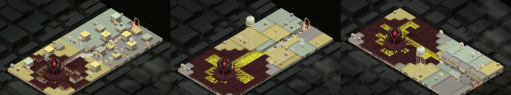
NEW the handoff, played in the real game
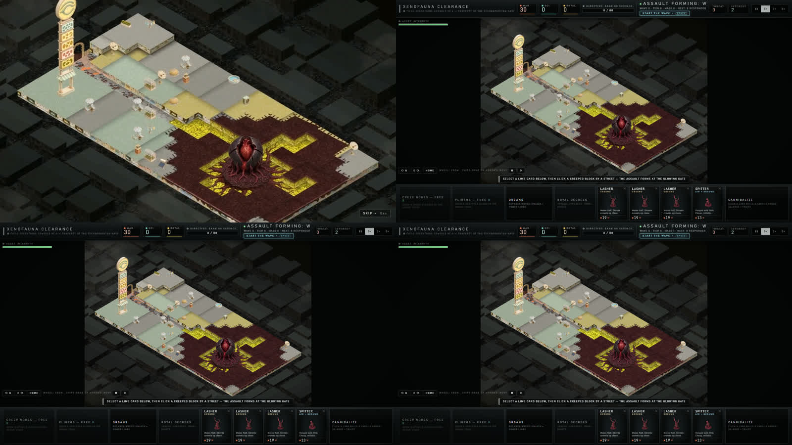
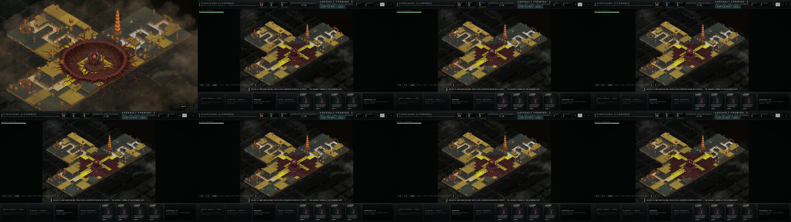
NEW one ending from each of the ten tile sets
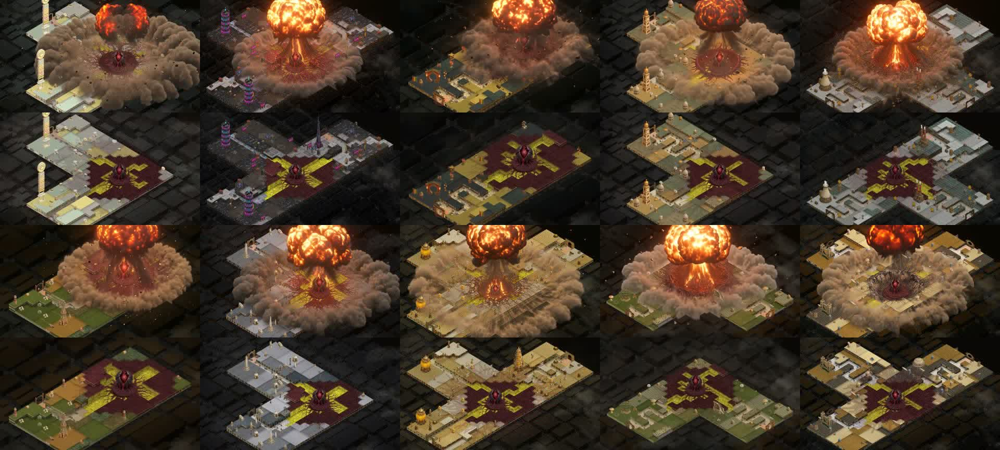
2–3. The organ stage
The stage now covers the whole window. All 28 cards sit in a three-column tray beside the grid, with no scrolling, and the grid is sized to the space left (1061×589 at 1920×1080, was 754×419 at every size). The limb hand, wave bar and START THE WAVE are hidden while it is open and come back when you go TO THE SURFACE; your WAR and SCI are shown inside the stage.
- Placed / owned: a grown one-of-a-kind organ's card is lit in its own colour with a "✓ LV n" badge; repeatable organs show "×n".
- Upgrade cost and benefit: the card reads "▲ LV n+1 · price · +10% power & speed"; hovering the organ or its card spells out the level, the price, the limbs it powers and whether you can afford it.
- Click to upgrade: the card said "click it to level" but its click did nothing (only clicking the organ on the grid worked). Fixed. Also, the heart stayed picked after placing, so your next click tried to place another; that click now drops the heart instead.
- Heart under the Tendril Root: the rule and the preview always agreed, but the two-wide heart was pinned by its left corner to the cell under your pointer. Below the root it reached into a blocked cell to the right and showed red. It now tries every way of covering the cell you point at. Not reproduced on your exact board, so this is the most likely cause, not a confirmed one.
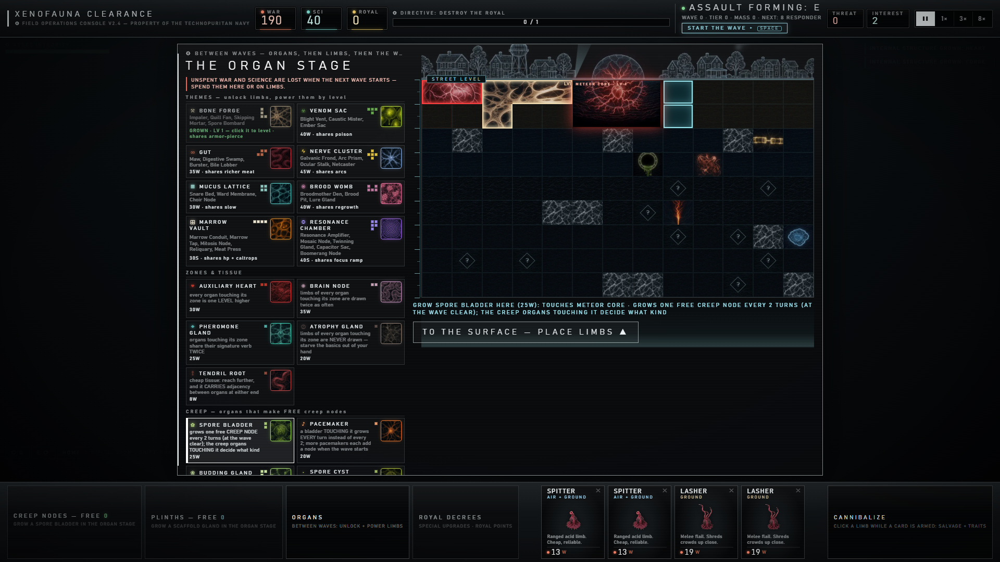
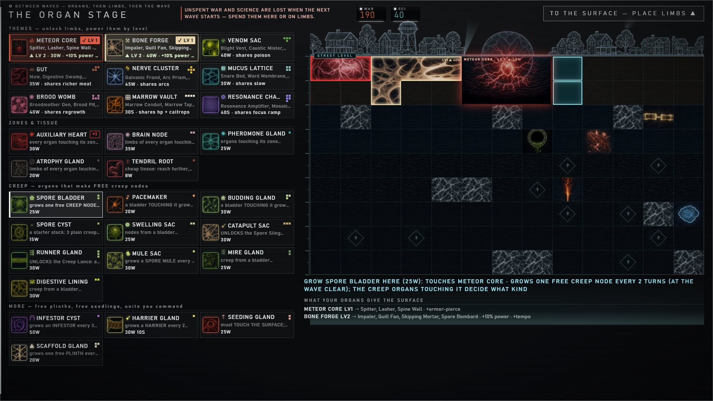
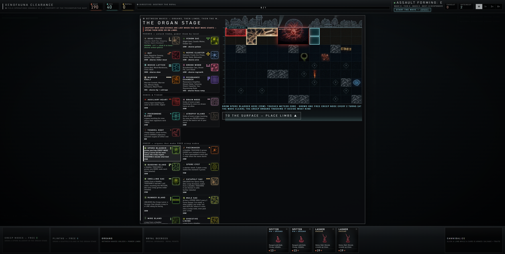
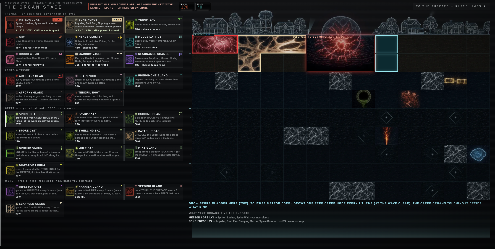
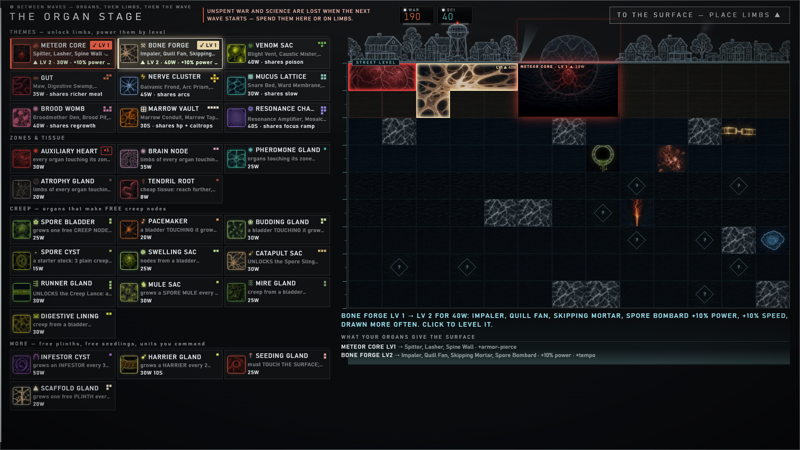
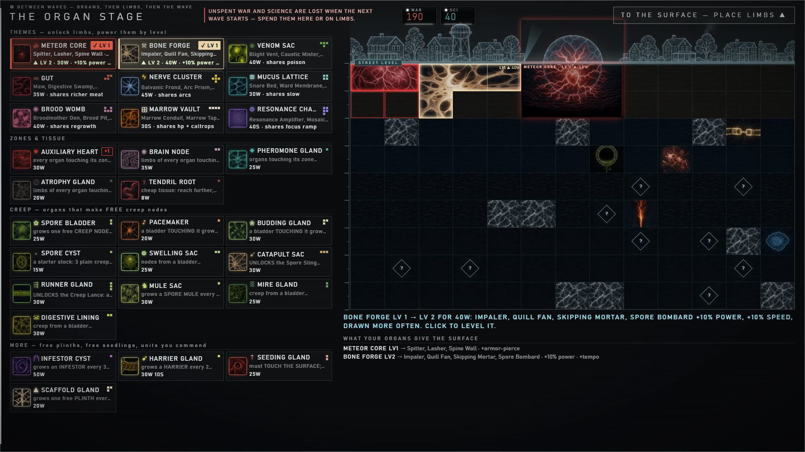
4. Hits on the base and on limbs
The game took hit points off the meteor and the limbs without ever telling the screen or the sound, so nothing showed. Now every hit by any enemy, the science caste's researchers draining limbs included, makes the meteor or limb flinch away from the blow and flash red (just a tint under Reduce flashes). It also shows an impact ring and splat on the attacker's side, and plays a new impact sound. The sounds are throttled so a swarm drums rather than buzzes. The ASSET INTEGRITY bar jolts and shows what you just lost.
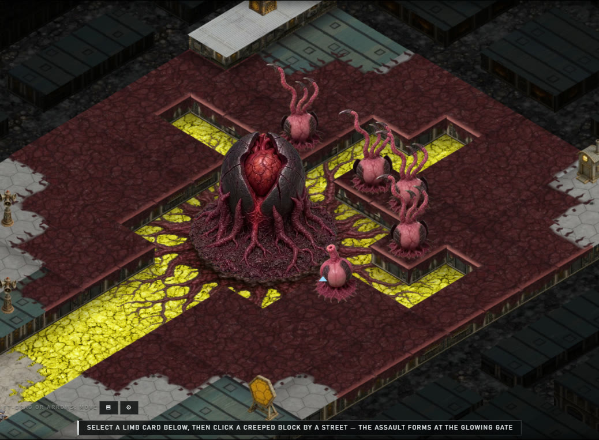
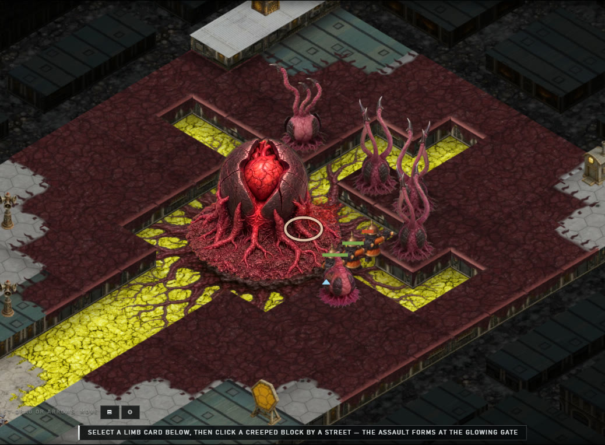
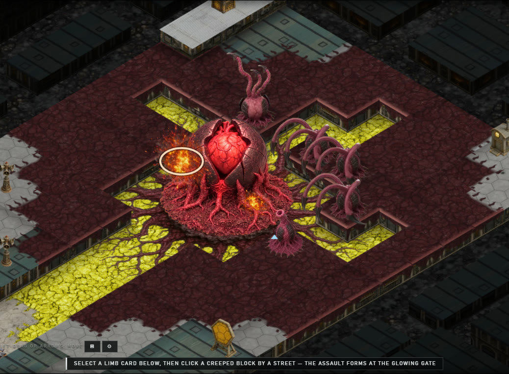
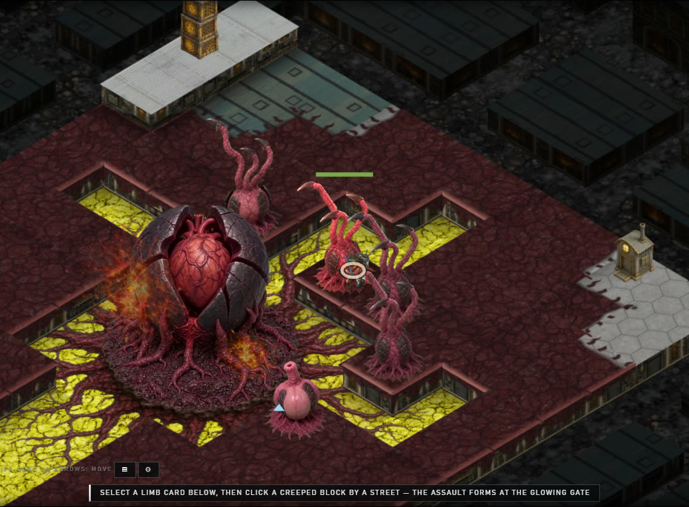
A 10-second swarm, with the game's own sound
Money: about 4.5M RFab tokens (~$90) from your own balance: the 120 film endings and the new hit sounds. A $300 top-up I tried
was refused by the safety check and turned out not to be needed; the balance is now about 186k tokens (~$3.70).
All 902 tests pass. Not run: the desktop launcher (it opens a window on your screen).
Technical write-up for an engineer or AI: C:\Users\Merry\dev\space-derelict\games\broodfall\HANDOFF.md.